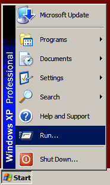
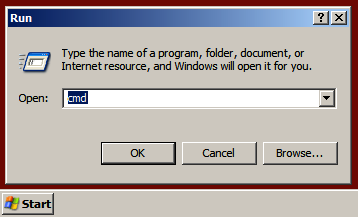
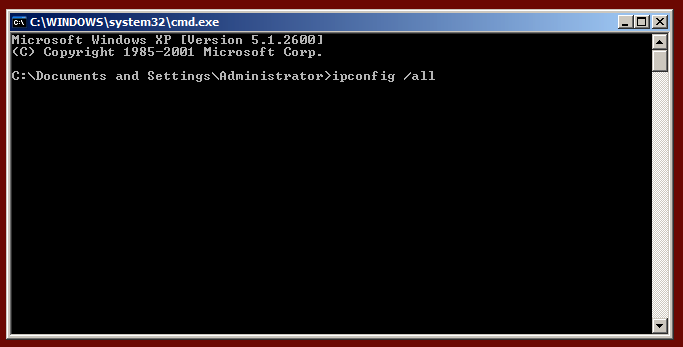
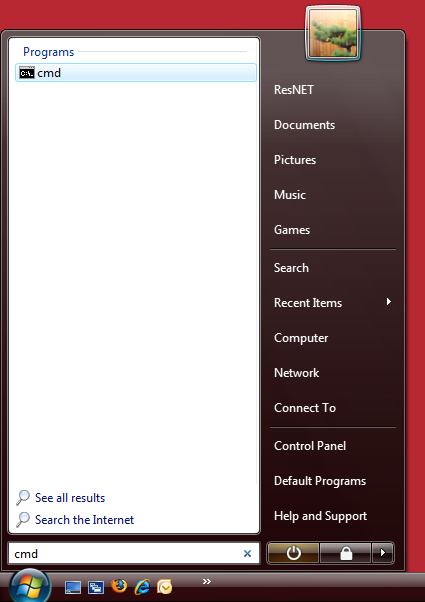
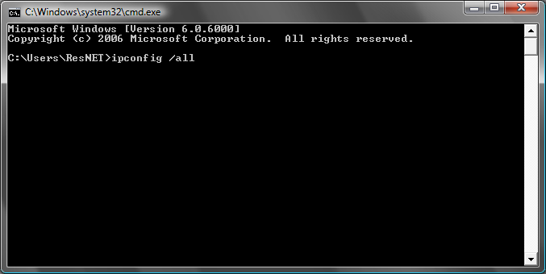
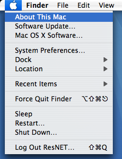
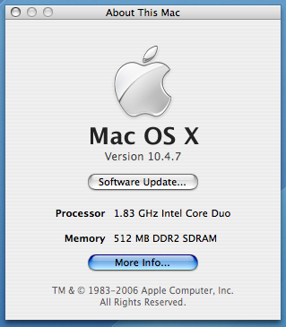
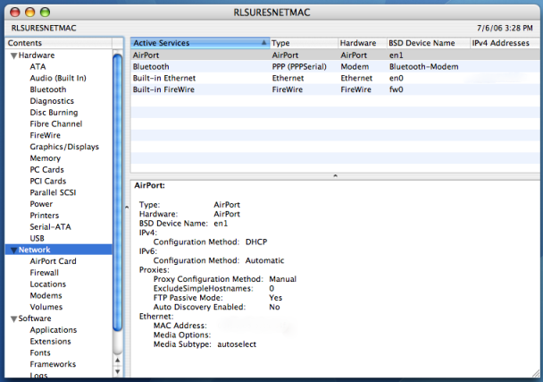

Finding Your MAC Address
On Windows Xp
- Select "Start" » "Run".

- Type cmd into the window and click "OK".

- In the newly opened window, type ipconfig /all and press enter.

- Displayed will be one or more types of connections. The MAC address will be listed as the physical address.
- "Ethernet Adapter Wireless Network Connection" = (Wireless Network Card)
"Ethernet Adapter Local Area Connection" = (Wired Network Card)
On Windows Vista or 7
- Select "Start" and type cmd into the search menu

- In the newly opened window, type ipconfig /all and press enter.

- Displayed will be one or more types of connections. The MAC address will be listed as the physical address.
- "Ethernet Adapter Wireless Network Connection" = (Wireless Network Card)
"Ethernet Adapter Local Area Connection" = (Wired Network Card)
On Mac OS X
- Click the Apple logo » "About this Mac".


- Select "Network" from the panel on the left, and then "AirPort" on the top-right panel. The MAC address will be listed in the bottom-right panel.
